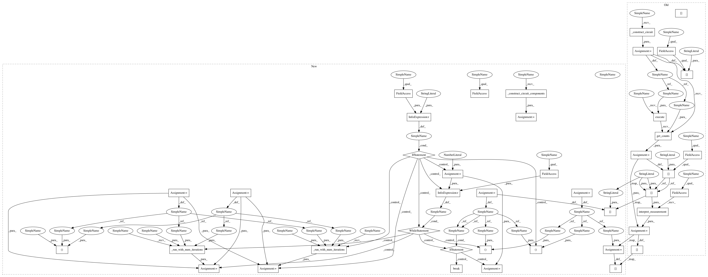

06976686b8576a7d1b55794b39440270d89139d9,qiskit_acqua/grover/grover.py,Grover,run,#Grover#,142
Before Change
return qc
def run(self):
qc = self._construct_circuit()
self._ret["circuit"] = qc
self._ret["measurements"] = self.execute(qc).get_counts(qc)
self._ret["result"] = self._oracle.interpret_measurement(self._ret["measurements"])
return self._ret
After Change
return assignment, oracle_evaluation
def run(self):
qc_prefix, qc_amplitude_amplification, qc_measurement = self._construct_circuit_components()
if self._mode == "manual":
qc_amplitude_amplification.data *= self._num_iterations
assignment, oracle_evaluation = self._run_with_num_iterations(
qc_prefix, qc_amplitude_amplification, qc_measurement
)
else:
qc_amplitude_amplification_single_iteration_data = qc_amplitude_amplification.data
current_num_iterations = 1
while current_num_iterations <= self._max_num_iterations:
assignment, oracle_evaluation = self._run_with_num_iterations(
qc_prefix, qc_amplitude_amplification, qc_measurement
)
if oracle_evaluation:
break
current_num_iterations += 1
qc_amplitude_amplification.data += qc_amplitude_amplification_single_iteration_data
self._ret["result"] = assignment
self._ret["oracle_evaluation"] = oracle_evaluation
return self._ret
In pattern: SUPERPATTERN
Frequency: 3
Non-data size: 42
Instances
Project Name: Qiskit/qiskit-aqua
Commit Name: 06976686b8576a7d1b55794b39440270d89139d9
Time: 2018-07-23
Author: shaohan.hu@ibm.com
File Name: qiskit_acqua/grover/grover.py
Class Name: Grover
Method Name: run
Project Name: Qiskit/qiskit-aqua
Commit Name: 06976686b8576a7d1b55794b39440270d89139d9
Time: 2018-07-23
Author: shaohan.hu@ibm.com
File Name: qiskit_acqua/grover/grover.py
Class Name: Grover
Method Name: run
Project Name: Qiskit/qiskit-aqua
Commit Name: d089d39bdac873ab9c53f494f95e367e61c1e94c
Time: 2018-07-28
Author: shaohan.hu@ibm.com
File Name: qiskit_aqua/grover/grover.py
Class Name: Grover
Method Name: run
Project Name: Qiskit/qiskit-aqua
Commit Name: acbd8c094f37525597e50f67ac87a74ccf89750c
Time: 2018-07-26
Author: shaohan.hu@ibm.com
File Name: qiskit_aqua/grover/grover.py
Class Name: Grover
Method Name: run